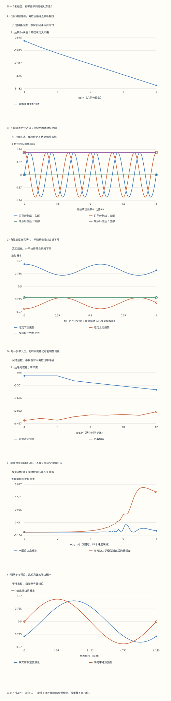

本页目录
基础衔接 03 · Berry 几何相位：把规范、网格与真实演化分开
先修：量子态与内积、自旋、绝热近似。目标：从两能级本征态推出联络、曲率和回路相位，再用可精确求解的演化检查绝热近似。固定 \(A=i\langle u|du\rangle\)、\(F=dA\)，球面取向为 \(d\theta\wedge d\phi\)。
1. 能谱相同，不意味着量子态沿途没有变化
取 \(H=E\mathbf n\cdot\boldsymbol\sigma\)，其中 \(E>0\)，\(\mathbf n=(\sin\theta\cos\phi,\sin\theta\sin\phi,\cos\theta)\)。两条能量恒为 \(\pm E\)，能隙是 \(2E\)；改变方向会改变本征态，即使能谱不动。
先假设系统缓慢运动并保持在非简并瞬时本征态，写 \(|\psi(t)\rangle=e^{i\alpha(t)}|u(t)\rangle\)。代入 Schrödinger 方程，再左乘 \(\langle u|\)：
第一项给动力学相位，第二项给几何相位。只有明确绝热条件，才能把真实演化简单写成“瞬时本征态乘这两个相位”。本课的实验同时计算本征态族的几何性质和真实有限速度演化，以便看见这项假设何时不够。
几何相位是相对于参考过程的相位，单独量一次同一态的概率无法读取全局相位。后面会指定一条参考臂，实际计算干涉端口概率。
2. 下能级的符号要从向量算出来
记 \(s=\sin(\theta/2)\)、\(c=\cos(\theta/2)\)，选择北侧局部表示
范数为一。矩阵乘法的第一分量是 \(e^{-i\phi}(-s\cos\theta+c\sin\theta)=e^{-i\phi}s\)，第二分量是 \(-s\sin\theta-c\cos\theta=-c\)，所以它确实满足 \(H|u_-^N\rangle=-E|u_-^N\rangle\)。
求导得到 \(\partial_\theta u_-^N=(-e^{-i\phi}c,-s)^T/2\)、\(\partial_\phi u_-^N=(ie^{-i\phi}s,0)^T\)。由 \(\langle u|\partial_\theta u\rangle=0\)、\(\langle u|\partial_\phi u\rangle=-is^2\)，
这里下带曲率为正，依据是已固定的联络定义、下能级和球面取向。改取上能级、反转取向或改联络定义都可能改变符号；不能在其他约定之间只抄一个正负号。
练习 1 · θ=π/3，正向纬线的几何相位和局部曲率是多少？
联络沿 \(\phi:0\to2\pi\) 积分给 \(\gamma_N=\pi(1-\cos\theta)=\pi/2\)，所以复相位为 \(i\)。曲率分量为 \(F_{\theta\phi}=\sin(\pi/3)/2=\sqrt3/4\)。局部曲率分量、整圈相位和复相位是三种不同对象，不应把它们的数值混用。
3. 两个局部规范，以及不能漏掉的端点
北极处 \(u_-^N=(0,1)^T\) 不依赖 \(\phi\)，但南极处变成 \((-e^{-i\phi},0)^T\)。同一个物理点出现不同向量表示，是这一局部规范不能覆盖全球；投影态本身并没有奇异。
取南侧表示 \(u_-^S=e^{i\phi}u_-^N=(-s,e^{i\phi}c)^T\)。一般变换 \(u'=e^{i\chi}u\) 给出
沿正向纬线，\(\gamma_S=\gamma_N-2\pi\)，两者的 \(e^{i\gamma}\) 相同。若相位选择在首尾并不周期，就必须写成
这里物理投影路径闭合，因此首尾态只差相位，重叠模为一。联络积分改变 \(-\Delta\chi\)，端点重叠的相位改变 \(+\Delta\chi\)，二者相消。实数相位可以差整倍 \(2\pi\)，比较时应看复相位或模 \(2\pi\) 的圆周距离。
实验额外使用平滑 \(\chi=a\phi+b\sin(3\phi)\)。非整数 \(a\) 使端点向量相位不同；\(b\) 会改变沿途联络，但其首尾变化为零。两者都不改变投影或曲率。

练习 2 · 北侧纬线再乘exp(0.7iφ)，为什么只积分联络会错？
新积分是 \(\gamma_N-1.4\pi\)。首尾重叠为 \(e^{i1.4\pi}\)；其主值相位也可以写成 \(-0.6\pi\)。补偿后的实数代表可能成为 \(\gamma_N-2\pi\)，但复相位准确回到 \(e^{i\gamma_N}\)。主值分支跳变不是干涉突变。
4. 一条纬线的相位，不等于整个球面的 Chern 数
纬线相位 \(\pi(1-\cos\theta)\) 随极角连续变化，一般不是 \(2\pi\) 的整数倍。整个定向球面的积分则是
这里 Chern 数属于有能隙的下带本征线丛。反向走同一条纬线会使该回路相位变号，却不会同时反转我们已固定的整个球面取向；不能因此把这张球面的 Chern 数也自动改号。
不依赖向量相位的检查方法是投影 \(P_-=(1-\mathbf n\cdot\boldsymbol\sigma)/2\)。若把球面参数写成 \(x,y\)，
用 Pauli 交换关系可以独立核对正号。这为拓扑能带的两带模型提供了可迁移的计算工具。
练习 3 · 数值中点积分得到1.006而不是1，能否说Chern数不是整数？
不能直接这样判断。将 \(\theta\) 等分为 \(n\) 段，中点法给
它有限网格时略大于一，随细分趋于一。也可对每个纬带精确积分，单元通量为 \(\pi[\cos\theta_j-\cos\theta_{j+1}]\)，相加直接望远镜式抵消成 \(2\pi\)。实验把近似求积和精确单元通量分别列出，不把前者当精确拓扑整数。
5. 用重叠乘积计算相位：闭合和采样都要正确
取 \(N\) 个分段，包含首尾点 \(u_0,\ldots,u_N\)。令 \(P_{\rm open}=\prod_{j=0}^{N-1}\langle u_j|u_{j+1}\rangle\)，\(z=\langle u_0|u_N\rangle\)，离散复相位定义为
它等价于给乘积加上闭合项 \(\langle u_N|u_0\rangle\) 后再取负相位。每个点的规范因子沿乘积逐项相消，因此规范不变性在有限网格就成立；有限网格与连续曲线之间仍可能有几何离散误差。这是两个不同判断。
对于等间距纬线，北侧每一段的重叠相同：\(z_\Delta=c^2+s^2e^{-i\Delta\phi}\)，故相位可独立由 \(-N\arg z_\Delta\) 检查。实验保留全部节点、复重叠和模，而不是只输出一个角度。
练习 4 · 为什么赤道只分两段时，相位算法失效？
此时 \(c^2=s^2=1/2\)、\(\Delta\phi=\pi\)，因此 \(z_\Delta=(1+e^{-i\pi})/2=0\)。相邻态正交，零复数没有相位。真实连续赤道回路仍有几何相位 \(\pi\)；出问题的是这套采样。细分到非正交邻点后才能计算。代码为这一精确数学条件报告“不适用”，不采用三角函数舍入留下的极小复数方向。
6. 真实旋转磁场：用一个精确解检查绝热说法
现在取 \(\phi(t)=\omega t\)，一圈时间 \(T=2\pi/|\omega|\)，初态为 \(u_-^N(\theta,0)\)。以下取 \(\hbar=1\)，所以 \(E\) 与 \(\omega\) 同量纲；恢复单位时应把能量与 \(\hbar\omega\) 比较。
写 \(R(t)=e^{-i\omega t\sigma_z/2}\)、\(\psi=R\xi\)，旋转参考系中的 Hamiltonian 为
右侧是常矩阵指数，因此可精确计算每个时刻，而不预设系统始终在下带。令 \(\mathbf h=(E\sin\theta,0,E\cos\theta-\omega/2)\)，
当 \(|\mathbf h|=0\) 时连续取 \(\sin(|\mathbf h|t)/|\mathbf h|\to t\)，不需要人为加小数避免除零。对 \(E>0\)，从初始下带出发，瞬时上带跃迁概率为
页面另画解析包络 \(\omega^2\sin^2\theta/(4|\mathbf h|^2)\)，对所有时刻给出上界。图中129个时刻只是采样，极慢驱动时可能无法解析整圈中的快速小幅振荡；不能把采样连线当成全部连续细节。速度图也只连接81个采样点。适当慢驱动下跃迁很小；快速时则可能显著。某些速度恰好一圈后回到原带，也不能据终点一次复现就断言沿途绝热，必须检查时间曲线和相位。
练习 5 · 推出旋转系中的负ω/2项，并解释一圈后的负号
代入 \(i\dot\psi=H\psi\) 得 \(i\dot\xi=(R^\dagger HR-iR^\dagger\dot R)\xi\)，而 \(R^\dagger\dot R=-i\omega\sigma_z/2\)，所以附加项是 \(-\omega\sigma_z/2\)。一圈时 \(\omega T=\pm2\pi\)，\(R(T)=-I\)。这个自旋旋转负号必须保留在真实演化中，但不能孤立地把它当作整项 Berry 相位；另一矩阵指数仍包含动力学与方向信息。
7. 几何网格与时间网格是两个独立旋钮
几何分段数 \(N\) 决定重叠乘积如何近似指定回路；时间步数 \(M\) 决定如何近似真实的时间有序演化。实验的数值演化在每个时间段中点取 \(H\)，按时间顺序相乘 \(e^{-iH(t_{j+1/2})\Delta t}\)，并与上一节精确解比较。
每个小步都幺正，因此范数可以非常接近一；粗网格仍可能算错方向和相位。页面给出完整态矢误差 \(\|\psi_M(T)-\psi_{\rm exact}(T)\|\)、上态概率误差和范数偏离，三者分开列出。此处两算法使用同一初态和同一相位约定，比较完整态矢相位有意义。
练习 6 · 慢驱动时，固定16个时间步为什么也可能很不准？
减小 \(|\omega|\) 会增加整圈时间 \(T\)，固定 \(M\) 时每步 \(\Delta t=T/M\) 反而变大。即使 Hamiltonian 的方向每步只转固定小角度，长时间积累的相位仍可能使离散演化偏离。预设“保持幺正也可能算不准”取 \(E=1,\theta=60^\circ,|\omega|=10^{-1.5},M=16\)，完整态矢误差约 \(0.975\)，但范数仍接近一。提高 \(M\) 是检查数值积分；提高 \(N\) 不能修复这个时间积分误差。
8. 给相位一条参考臂，才能得到可比较的干涉概率
理想平衡干涉仪的一臂经历真实演化 \(U(T)\)，另一臂保持初始下态并积累参考动力学相位 \(e^{iET}\)。定义两臂态的重叠
这里 \(\varphi\) 是可调参考相位，\(P\) 是一个输出端口的总概率，未对自旋态另行后选择。条纹可见度为 \(|\mathcal A|\)。若真实演化有跃迁，两臂内部态不完全一致，可见度会降低；有限速度下 \(\mathcal A\) 不能直接称作一个纯 Berry 相位。
隔离下带的绝热极限预测 \(\mathcal A\to e^{i\gamma}\)，于是 \(P\to[1+\cos(\gamma-\varphi)]/2\)。实验既画真实演化条纹，也画这个有条件的预测。默认 \(\theta=60^\circ\)，绝热几何复相位是 \(i\)；有限速度下仍应使用实际复振幅。
练习 7 · 一个参考相位下测得P=1/2，能否断定γ=π/2？
不能。在理想可见度一、参考相位零时，\(\gamma=\pi/2\) 和 \(-\pi/2\) 都给同一概率；可见度降低还会产生更多可能。扫描参考相位得到整条条纹，才能区分复振幅的方向和模。回路反向时，几何相位变号，这一区别在完整参考相位扫描中可见。
9. 能隙关闭与换单位：公式能画，不等于条件成立
实验允许 \(E=0\)。这时 \(H=0\)，真实演化仍有明确答案 \(U=I\)；但 Hamiltonian 不再选出唯一隔离下带。代码保留人为指定的向量族及其投影几何，同时将物理下带 Chern 数和绝热 Berry 预测标为“不适用”。上、下投影也只表示对指定两个向量的投影，不能再叫能量带占据。
北极与南极的方向不随 \(\phi\) 改变，几何复相位为一。局部规范在某个极点不适合作全球坐标，并不意味着有真实跃迁或物理奇点。与此不同，能隙消失确实改变了隔离带条件。
练习 8 · 同时把E、ω乘α，并把时间除α，哪些结果应保持不变？
每个指数中的 \(Ht\) 和 \(\omega t\) 不变，因此真实终态、跃迁概率、两臂重叠与端口概率均不变。固定相同 \(M\) 时，中点时间演化也保持相同的无量纲步骤。只降低 \(E\) 而固定 \(\omega\) 则改变了驱动相对能隙的速度，不能称作换单位；\(E=0\) 还失去唯一隔离能带。
10. 实验顺序与继续学习
先保持物理回路不变，切换北南规范和端点相位；再用两段赤道观察离散算法失效，随后只细分 \(N\)。接着固定物理演化，只细分 \(M\)，对照范数与态矢误差。最后改变真实驱动速度并扫描参考臂相位，区分几何预测、动力学和数值误差。
默认 \(\theta=60^\circ,N=64,E=1,|\omega|=0.1,M=256\)。禁用脚本仍可查看固定记录；启用后可调十一项输入，并查看每个采样态、复重叠和实际演化。
无脚本对照：六份完整记录区分本征态族几何与真实演化。复数采用[实部, 虚部]；关闭能隙的记录只保留人为选态族的几何，隔离带预测不适用。
| 预设 | 隔离带 | 离散相位有定义 | 离散复相位 | 终态上投影概率 | 时间网格态矢误差 | 真实参考重叠 | Berry预测 | 端口概率 |
|---|---|---|---|---|---|---|---|---|
| default | 是 | 是 | [0.000946806587, 0.999999552] | 0.00196133469 | 0.00150214674 | [-0.0603487905, 0.997194409] | [5.0532155e-16, 1] | 0.469825605 |
| twist | 是 | 是 | [0.000946806587, 0.999999552] | 0.00196133469 | 0.00150214674 | [-0.0603487905, 0.997194409] | [5.0532155e-16, 1] | 0.469825605 |
| orthogonal | 是 | 否 | 不适用 | 1.53320766e-05 | 0.00158342004 | [-0.996921179, -0.0783123913] | [-1, 5.6655389e-16] | 0.00153941046 |
| fast | 是 | 是 | [0.000946806587, 0.999999552] | 0.139067398 | 0.000151196353 | [-0.666130924, 0.645911909] | [5.0532155e-16, 1] | 0.166934538 |
| coarse | 是 | 是 | [0.000946806587, 0.999999552] | 9.43168009e-05 | 0.975443098 | [-0.0188205138, 0.999775711] | [5.0532155e-16, 1] | 0.490589743 |
| closedgap | 否 | 是 | [0.000946806587, 0.999999552] | 1.12481984e-32 | 0 | [1, 0] | 不适用 | 1 |
下载六份完整记录，含全部复态、相邻重叠、曲率和演化扫描。

回到拓扑能带，再进入量子几何张量与量子度量。局部规范的粘合也可联系数学的层与粘合，但物理本征态族还带有 Hermitian 内积与联络。
原始来源：Berry：Quantal phase factors accompanying adiabatic changes，以及作者公开的论文原文。已核查原文相位分解与干涉讨论；本课按明确下带和联络约定独立展开两能级计算，并用旋转系精确解检查有限速度效应。核查：2026-09-13。